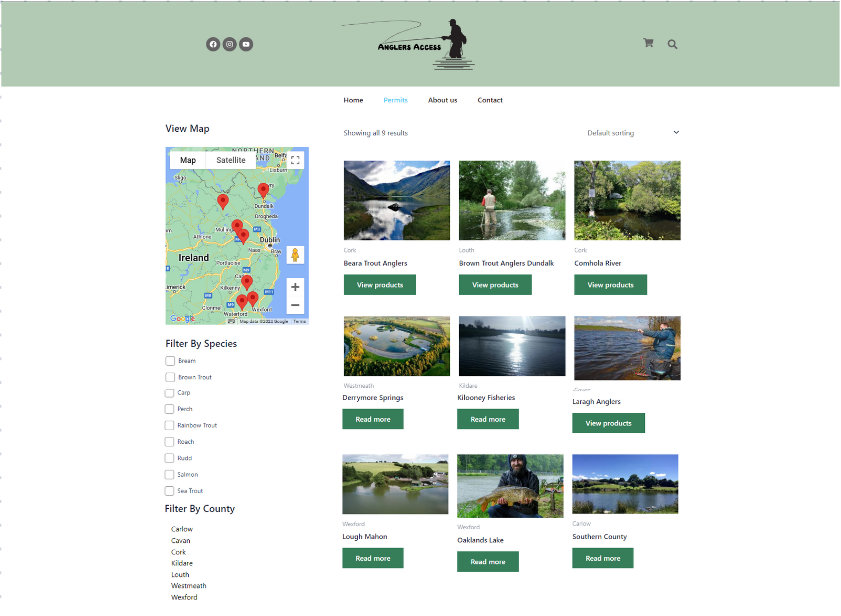
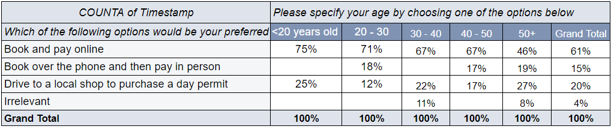
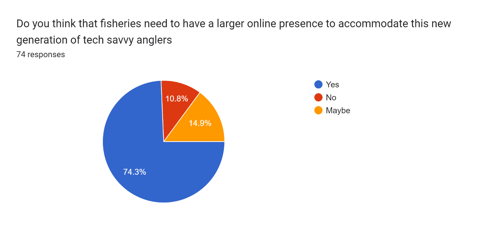
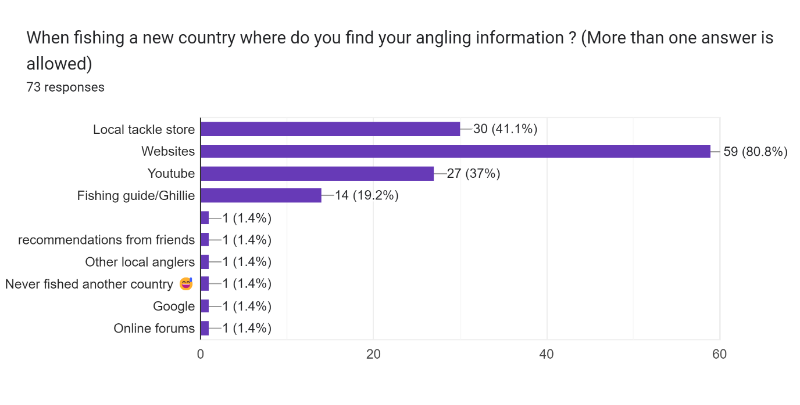
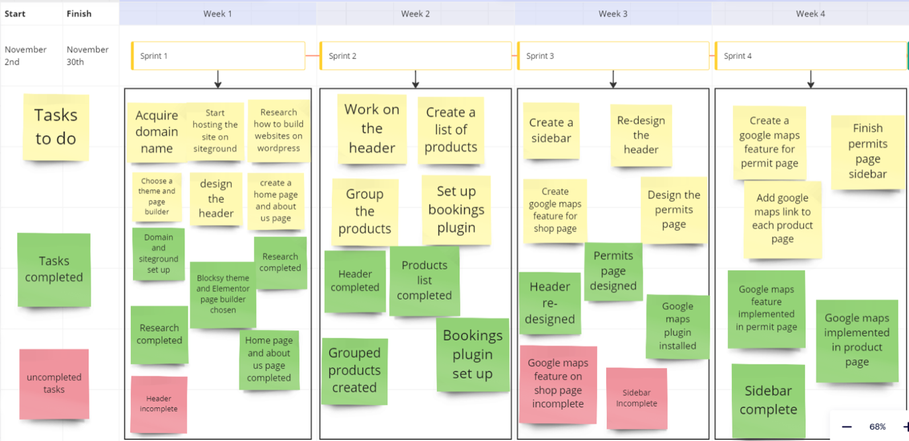
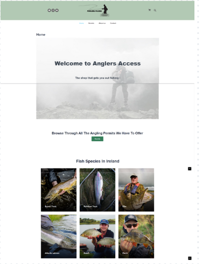
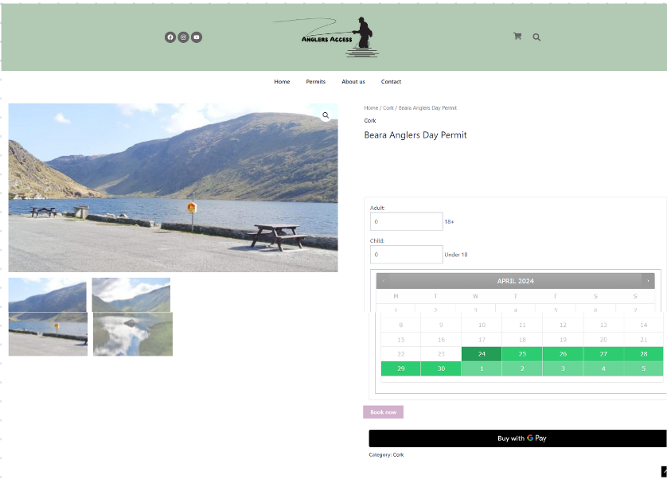
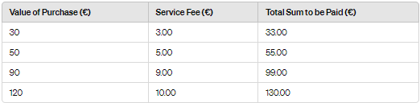
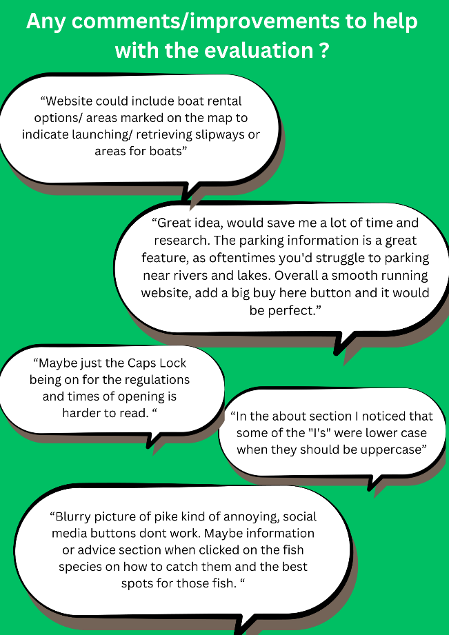
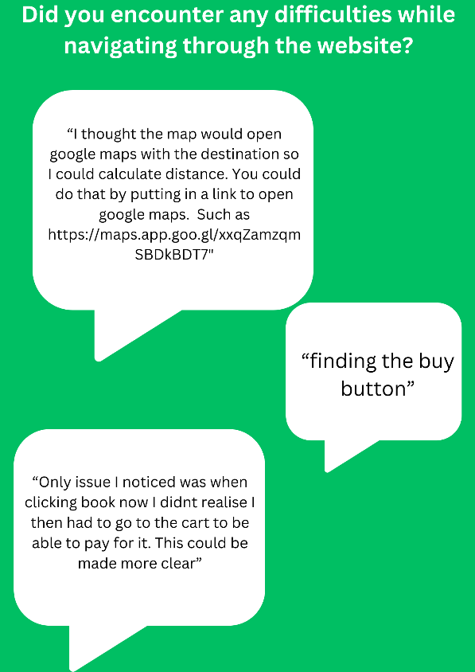

An online marketplace that lets anglers find Irish fisheries and book day or weekly permits in a few clicks, instead of hunting down a phone number or driving to a tackle shop.

Fishing clubs around Ireland have seen a steep drop in younger anglers. My hypothesis was that the industry simply hasn't kept up with the last 30 years of tech, so it's losing touch with the people who book everything else on their phones.
Ireland has roughly 127 fisheries. Only 42 have a website, and only 10 sell permits online. The rest sell over the phone or in a local shop, and the information about where to buy is often out of date or impossible to find. Plenty of clubs are only known by word of mouth.
Anglers Access works like a ticketing site for fishing. Anglers browse fisheries on a map, filter by county or species, check where to park and get to the water, and book a permit for the day they want. Clubs get exposure to Irish anglers and to tourists, without paying anything.
The research question: is there real demand for this from anglers, and would fisheries actually let a third party sell their permits?
I used a mixed-methods approach: a literature review, secondary market research, a survey of anglers, and meetings with fisheries all over the country.
Looked at how ticketing moved from paper to digital, and used the Theory of Reasoned Action, Theory of Planned Behaviour and the Technology Acceptance Model to understand what makes people adopt a new way of buying.
Around 406,000 recreational anglers in Ireland, with Britain, Germany, France and North America making up most angling tourists. Main competitors: FishPal and Inland Fisheries Ireland.
74 responses from freshwater anglers, broken down with pivot tables by age group and how many permits they buy each year.
Contacted 51 fisheries and met with clubs in person, using an early prototype of the site to pitch the idea.
I expected people over 50 to mostly prefer buying in person. They didn't: nearly half wanted to book online too.
74% said fisheries need a bigger online presence to attract the next generation, and 81% use websites to research fishing when they travel.


Of the 51 fisheries I reached, 9 signed up, 16 are still deciding, and 26 said no. The no's taught me a lot:

The clubs that joined loved the parking and access map. One said it would finally stop people cutting across a farmer's land to reach the river.
I started building early, in November 2023, so I'd have something real to show fisheries in the new year. I used Agile Scrum, which paid off when the first navigation idea turned out to be wrong.

Bought the anglersaccess.ie domain, set up SiteGround hosting, picked the Blocksy theme and Elementor, and built the home and about pages in a natural green palette.
Created grouped products for day and weekly permits and added WooCommerce Bookings, with capacity limits so rivers don't get overcrowded.
Scrapped the mega menu of counties. It was clunky, so counties and species moved into a filter sidebar on the permits page.
Added a Google Maps view of every fishery, plus a per-club map template showing where to park and access the water.
In April 2024 I swapped the placeholder products for the 9 real clubs, added their access maps, set up Stripe for payments (it supports split payments so money can go straight to each fishery) and used AutomateWoo to email booking details to both the angler and the club.


A 10% service fee charged to the angler, capped at €10. Fisheries pay nothing, which mattered: several told me they wouldn't join if it cost them. The model is based on how ticketing sites like Ticketmaster charge.

I tested the site with potential customers through a survey and with two fishery representatives and an Inland Fisheries Ireland employee through interviews.


The demand is real. 61% of anglers would rather book online, and the people who tested the site saw the value straight away. The hard part isn't the website, it's the supply: winning the trust of fisheries that are often run by older volunteer committees.
Building the prototype early was the best call I made. Walking into meetings with a working site turned an abstract pitch into something clubs could click through, and it's a big part of why 9 of them said yes.
Anglers Access was my final-year thesis for the BSc in E-Commerce in Retailing at TU Dublin, built as a team project with Luke Watson and Lawrence Proseckin, and supervised by Dr Wael Rashwan.
Fishery descriptions on the prototype were placeholders for display, and photos came from each club's own website or social media. The site was kept private and not launched publicly.